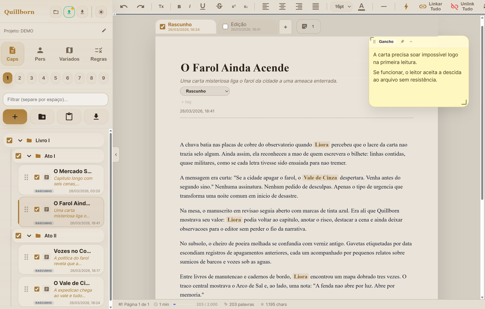

Timeline
Calendário e timeline do mundo
Visualize a cronologia da narrativa e do universo.
Para quem escreve ficção longa
Você tem 40 capítulos, dezenas de personagens e um mundo com regras próprias. Quillborn é onde tudo isso vive junto — capítulos, cenas, fichas, anotações e worldbuilding no mesmo lugar onde você escreve.

O que faz
Mais ferramentas
Visualize a cronologia da narrativa e do universo.
Gere o manuscrito pronto, com capítulos agrupados como quiser.
Precisa de um nome? Gere direto dentro do projeto.
Troque cores e tema. Escreva no ambiente mais confortável.
As fichas funcionam como fichas de RPG. Se você joga, serve pros dois mundos.
Para editores também
O Quillborn foi feito para escritores, mas se o editor tiver acesso ao projeto, ele enxerga o que normalmente fica invisível.
Acompanhe
O Quillborn ainda está em desenvolvimento. Beta em breve.